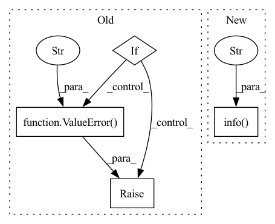

Pattern ID :16460
Before Change
if self.hparams.optim is None:
optimizer = torch.optim.Adam(parameters, lr=1e-4)
else:
if "_target_" not in to_DictConfig(self.hparams.optim).keys():
raise ValueError("Please provide a _target_ class for model.optim arg!" )
optimizer = hydra.utils.instantiate(to_DictConfig(self.hparams.optim), params=self.parameters())
self._init_lr = optimizer.param_groups[0]["lr"]
if self.hparams.scheduler is None:After Change
self.hparams.optimizer.name = "adamw"
if hasattr(self, "no_weight_decay"):
self.log_text.info(f"Model has method no_weight_decay, which will be used." )
optim_kwargs = {k: v for k, v in self.hparams.optimizer.items() if k not in ["name", "_target_"]}
optimizer = create_optimizer_v2(model_or_params=self, opt=self.hparams.optimizer.name, **optim_kwargs)
self._init_lr = optimizer.param_groups[0]["lr"]
In pattern: SUPERPATTERN
Frequency: 3
Non-data size: 4
Instances Fragment ID: 55369933
Project Name: rolnicklab/climart
Commit Name: d4a8bf41fb5dda3d04a45e31cd930fd10964e0a5
Time: 2022-06-06
Author: salvaruehling@gmail.com
File Name: climart/models/base_model.py
M Class Name: BaseModel
N Class Name: BaseModel
M Method Name: configure_optimizers(1)
N Method Name: configure_optimizers(1)
M Parent Class: LightningModule
N Parent Class: LightningModule
M File Name: climart/models/base_model.py
N File Name: climart/models/base_model.py
M Start Line: 292
M End Line: 298
N Start Line: 320
N End Line: 329
Before Change
messages.append(f"{message}: {file_relative}")
if temp_folder:
shutil.rmtree(temp_folder)
if messages:
raise ValueError(f"Some expected files were missing or did not have the expected contents:{os.linesep}"
f"{os.linesep.join(messages)}" )
def compare_folders_and_run_outputs(expected: Path, actual: Path) -> None:
After Change
message = compare_files(expected=file, actual=actual_file) if actual_file.exists() else MISSING_FILE
if message:
messages.append(f"{message}: {file_relative}")
logging.info(f"File {file_relative}: {message or "OK"}" )
if temp_folder:
shutil.rmtree(temp_folder)
return messages
Fragment ID: 55369935
Project Name: microsoft/innereye-deeplearning
Commit Name: be36e392062eadc4863d09867f3b03fcf1b02d9e
Time: 2021-06-21
Author: antonsc@microsoft.com
File Name: InnerEye/ML/baselines_util.py
M Class Name: AnonimousClass
N Class Name: AnonimousClass
M Method Name: compare_folder_contents(3)
N Method Name: compare_folder_contents(3)
M Parent Class:
N Parent Class:
M File Name: InnerEye/ML/baselines_util.py
N File Name: InnerEye/ML/baselines_util.py
M Start Line: 237
M End Line: 276
N Start Line: 239
N End Line: 265
Before Change
compare_folder_contents(azureml_folder, run=RUN_CONTEXT)
// Compare the set of files in the magic folder with the outputs stored in the run context of the parent run
azureml_parent_folder = expected / REGRESSION_TEST_AZUREML_PARENT_FOLDER
if azureml_parent_folder.is_dir():
if PARENT_RUN_CONTEXT is None:
raise ValueError(f"The set of expected test results in {expected} contains a folder "
f"{REGRESSION_TEST_AZUREML_PARENT_FOLDER}, but the present run is not a cross-validation "
"child run" )
compare_folder_contents(azureml_parent_folder, run=PARENT_RUN_CONTEXT)
After Change
messages.append(f"Issues in {message_prefix}:")
messages.extend(new_messages)
else:
logging.info(f"Folder {subfolder} not found, skipping comparison against {message_prefix}." )
if messages:
raise ValueError(f"Some expected files were missing or did not have the expected contents:{os.linesep}"
f"{os.linesep.join(messages)}")
Fragment ID: 55369928
Project Name: microsoft/innereye-deeplearning
Commit Name: be36e392062eadc4863d09867f3b03fcf1b02d9e
Time: 2021-06-21
Author: antonsc@microsoft.com
File Name: InnerEye/ML/baselines_util.py
M Class Name: AnonimousClass
N Class Name: AnonimousClass
M Method Name: compare_folders_and_run_outputs(2)
N Method Name: compare_folders_and_run_outputs(2)
M Parent Class:
N Parent Class:
M File Name: InnerEye/ML/baselines_util.py
N File Name: InnerEye/ML/baselines_util.py
M Start Line: 290
M End Line: 302
N Start Line: 280
N End Line: 300